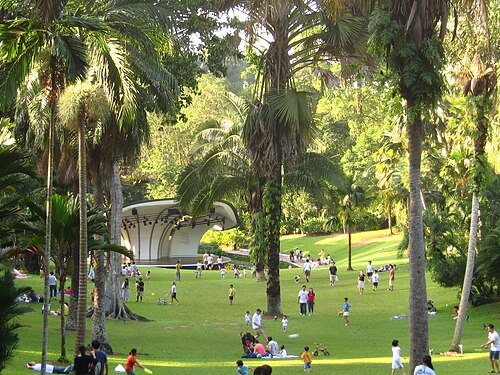

About Singapore Botanic Gardens
The Singapore Botanic Gardens is a tropical garden established in 1859 spanning Tanglin and Bukit Timah, and Singapore's first UNESCO World Heritage Site. Free to enter and open from early morning to midnight, the Gardens are home to heritage trees, lakes, themed gardens, and the world-renowned National Orchid Garden. A favourite spot for walking, running, picnics, and outdoor concerts, it remains one of the most visited and best-loved green spaces in Singapore.

History
The Gardens were founded in 1859 by the Agri-Horticultural Society on the site of a former plantation. Under the direction of botanist Henry Ridley from 1888, the Gardens played a pivotal role in developing rubber cultivation techniques that helped establish Southeast Asia's rubber industry in the early 20th century. The Gardens' orchid breeding programme, which began in 1928, grew into one of the world's largest orchid collections and led to the opening of the National Orchid Garden in 1995. In 2015, the Singapore Botanic Gardens became Singapore's first UNESCO World Heritage Site and the only tropical garden on the list.